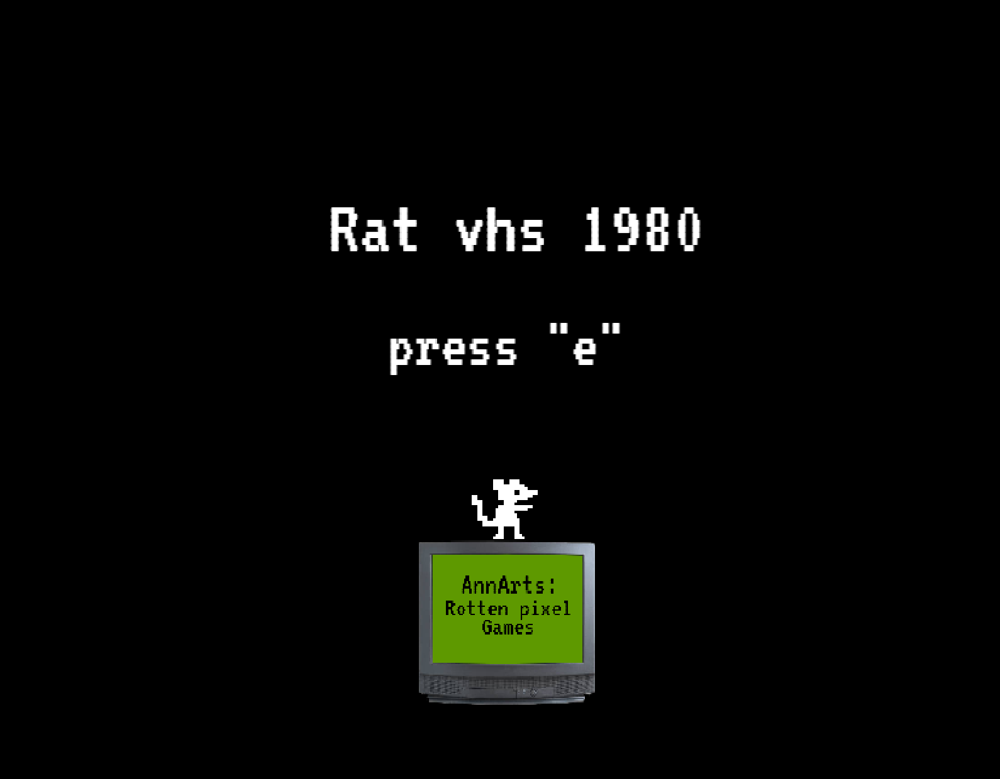

Clicker inutil
PlaySi, es un clicker inutil. Perderas tu tiempo si lo juegas, pero ¡hey! es más divertido que ver la pintura secar... o ver a tus padres divorciarse en el salón de la casa mientras ignoras sus gritos.

Rat Vhs
PlaySumergete en un mundo donde los vhs dejaron de existir... o bueno casi, ya que solo queda uno en el mundo